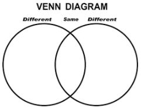

Unit 3: Computers & Society
Activity 5: Summative Evaluation
Computers and Society
Now that we have reviewed the many impacts that computers, mobile devices & the Internet have had on our society, our environment, our ethics & our careers, you will have an opportunity to demonstrate what you have learned.
This assignment will consist of 4 parts. Please ensure you submit all four!
 Summative Assignment
Summative Assignment
 For the first three parts (A, B, C) of the assignment, you are given 3 choices of formats for the final product. If you wish to choose another format, you MUST get my permission first.
For the first three parts (A, B, C) of the assignment, you are given 3 choices of formats for the final product. If you wish to choose another format, you MUST get my permission first.
Part A: Impact on Society - "Then" and "Now"
Choose a task that is part of a teenager's daily life (some ideas: making plans with friends, doing a research project for school, choosing & listening to music, asking your crush out on a date, etc. Be creative!)
How would that task have been accomplished about 25 years ago? How has technology helped (or hindered) the accomplishment of that task today? Use what we discussed in class, as well as conversations with your parents & other adults to create a comparison of 'then' vs 'now'.
You comparison may be done using:
Comic Strip - This can be done by hand or using an online tool such as Storyboard That or Pixton. DO NOT simply search for a pre-done image, this must be original!
Creative writing - Tell a story to illustrate the comparison.
Venn Diagram - Use words and/or symbols to show the similarities and differences. To get a good mark on this format, it must be detailed!

Rubric
| Categories | Level 1 (50 - 59%) |
Level 2 (60 - 69%) |
Level 3 (70 - 79%) |
Level 4 (80 - 90%) |
Level 4+ (90 - 100%) |
|---|---|---|---|---|---|
| Communication: describe key aspects of the impact of computers and related devices on society. C1 |
Describes key aspects of the impact of computers and related devices on society with limited clarity. | Describes key aspects of the impact of computers and related devices on society with some clarity. | Describes key aspects of the impact of computers and related devices on society with considerable clarity. | Describes key aspects of the impact of computers and related devices on society with a high degree of clarity. | Describes key aspects of the impact of computers and related devices on society with a very high degree of clarity. |
Part B: Impact on the Environment - Advertisement
For this task, you will choose a local (Ottawa area) company that offers computer and electronic recycling services. Imagine that they want a new advertising campaign that highlights their environmentally-friendly and socially responsible recycling practices. You will create an advertisement for them, using ONE of the following media:
Print (flyer, poster or billboard)
Audio (radio or podcast ad)
Video (youtube or TV ad)
Your ad must include the following information:
- Who: name of the company
- What: services they offer
- When: hours of operation
- Where: their drop-off locations
- Why: certifications they have obtained to validate their practices
- How: any costs associated with this service
Rubric
| Categories | Level 1 (50 - 59%) |
Level 2 (60 - 69%) |
Level 3 (70 - 79%) |
Level 4 (80 - 90%) |
Level 4+ (90 - 100%) |
|---|---|---|---|---|---|
| Application: display computer use policies that promote environmental stewardship and sustainability. C2 |
Displays computer use policies that promote environmental stewardship and sustainability with limited clarity. | Displays computer use policies that promote environmental stewardship and sustainability with some clarity. | Displays computer use policies that promote environmental stewardship and sustainability with considerable clarity. | Displays computer use policies that promote environmental stewardship and sustainability with a high degree of clarity. | Displays computer use policies that promote environmental stewardship and sustainability with a very high degree of clarity. |
Part C: Ethical Issues - Demonstration of Understanding
For this task, choose one of the ethical or legal issues discussed in class, and demonstrate your understanding of this issue & its consequences using one of the following formats:
Advice column - You will create a situation that features an ethical or legal dilemma, as well as a response that considers both the short and long term consequences that should be considered.
Mind Map - You can use an online tool such as Mindomo to map out your understanding of the issue
Infographic - Use words and images to demonstrate your understanding of the issue. Consider using a tool such as Canva (sign up with google, using your @ocsbstudent.ca account)
Rubric
| Categories | Level 1 (50 - 59%) |
Level 2 (60 - 69%) |
Level 3 (70 - 79%) |
Level 4 (80 - 90%) |
Level 4+ (90 - 100%) |
|---|---|---|---|---|---|
| Knowledge: identify legal and ethical issues related to the use of computing devices. C3 |
Identifies legal and ethical issues related to the use of computing devices with limited clarity. | Identifies legal and ethical issues related to the use of computing devices with some clarity. | Identifies legal and ethical issues related to the use of computing devices with considerable clarity. | Identifies legal and ethical issues related to the use of computing devices with a high degree of clarity. | Identifies legal and ethical issues related to the use of computing devices with a very high degree of clarity. |
Part D: Postsecondary Opportunities - Webquest
For the final part, you will complete an online 'scavenger hunt' to investigate postsecondary opportunities that are available to you.
This section must be completed individually, and you must be signed into your @ocsbstudent.ca account! You will only be permitted to hand in 1 submission for this part, so review your answers carefully!
Ready? Access the webquest here. You will be awarded a score out of 15 for this portion.